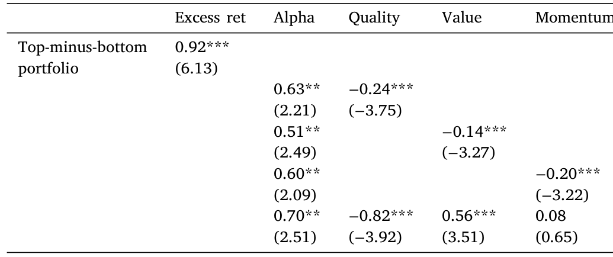
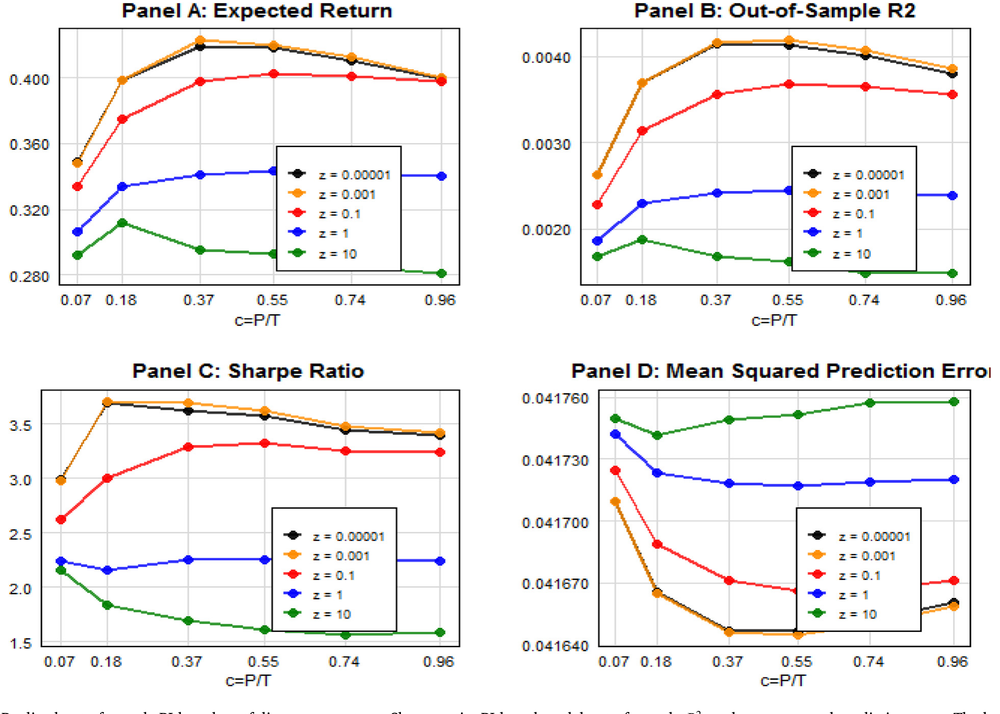
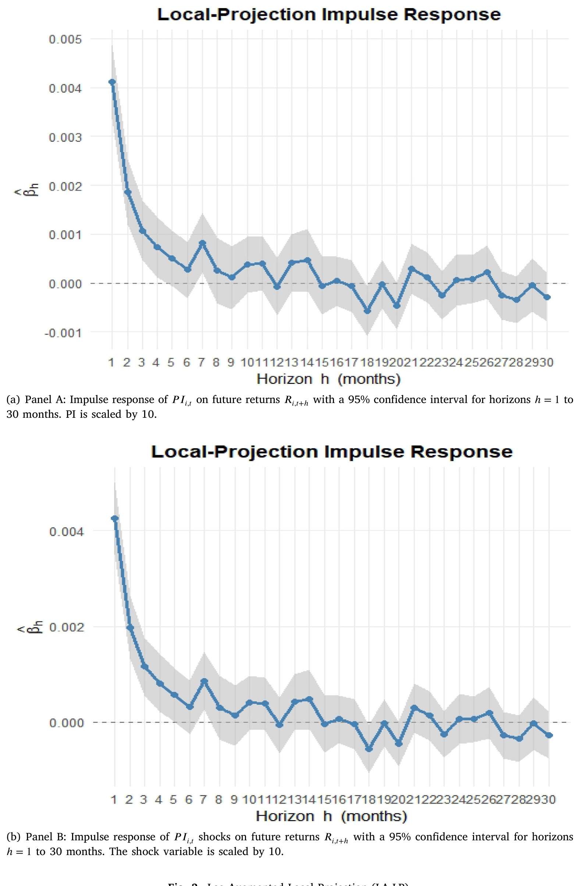
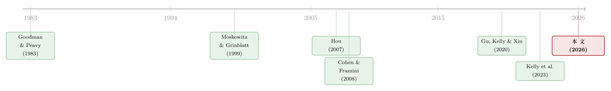

强邻、弱邻，和你站的位置：被「折叠」起来的同行效应
本文读的是 Avramov, Ge, Li & Linton (2026, Journal of Financial Economics)：作者把一家公司的每一个特征都拆成「同行群体的均值」和「公司相对同行的偏离」两束，再用 ridge 回归把它们压成一个 同行指数（Peer Index, PI）。这个指数预测未来收益与盈余惊喜，而且——这是全文最硬的一击——把它放进横截面回归后，动量、行业动量等四个老牌异象统统变得不显著，PI 自己却扛着 t = 5.71 屹立不倒。更妙的是，它捕捉的并不是「公司自己的可预测性」，因为连梯度提升树、随机森林、神经网络都拿不走它的信息。
1 一个被「折叠」起来的限制条件
横截面资产定价研究了几十年，主线一直没怎么变：用一家公司自己的特征，去预测它自己未来的收益。账面市值比、动量、盈利能力——我们把它们塞进 Fama–MacBeth 回归，看哪个系数还活着。这套范式如此根深蒂固，以至于我们几乎忘了问一个更朴素的问题：一家公司未来的收益，真的只跟它自己的财务报表有关吗？
显然不是。公司不是孤岛，它生活在一张由同行、上下游、共同分析师织成的网里。一个自然的想法是：别人的特征，能不能预测我的收益？这就是近年被 Kelly et al. (2023) 系统化的 跨股票可预测性（cross-stock predictability）。潜力很大，但一直没被充分挖掘。
本文的切入点极其精巧，精巧到几乎让人拍案。先看那个最熟悉不过的回归——用滞后收益 r_{i,t} 预测未来收益 r_{i,t+1}：
$$ r_{i,t+1} = x_{s,i,t}\,\beta + \epsilon_{i,t+1}. $$
接着，一个自然的动作是：把任意一个特征 x_{s,i,t}，按「同行群体 g_i」拆成两块——一块是剔除自己之后的同行均值（leave-one-out peer average），一块是公司相对同行的偏离（within-peer deviation）：
$$ z_{s,i,t} \equiv \frac{1}{|g_i|}\sum_{j\in g_i} x_{s,j,t}, \qquad \tilde{x}_{s,i,t} \equiv x_{s,i,t} - z_{s,i,t}. $$
代回原回归，就得到：
$$ r_{i,t+1} = z_{s,i,t}\,\beta + \tilde{x}_{s,i,t}\,\beta + \epsilon_{i,t+1}. $$
请盯住这个式子看三秒钟。它本身没有引入任何新信息——它只是把 x 拆成两半再拼回去。但它揭穿了一件我们一直默认、却从未质疑的事：标准的「公司自己」回归，强行把同行均值的系数和组内偏离的系数绑成了同一个 β。
可凭什么它们要相等？想想看：一个月的过去收益，行业均值那一块带着正号（这就是行业动量），而组内偏离那一块带着负号（这就是行业内、跨股票的短期反转）。同一个 β 怎么可能同时装下一正一负两种力量？于是真正关键的一步出现了——松开这个限制，让两束各走各的系数。作者把这称为 双重效应（dual effects）。
2 把同行效应拆成两束：识别策略
松开限制只是直觉，能不能站得住要靠数据说话。作者把上面的单特征写法推广到全部 S = 130 个特征的多元版本，这就是全文的中心方程：
有了它，「两束系数是否相等」就成了一个干净的统计假设：\(H_0:\ \boldsymbol{\beta}_z = \boldsymbol{\beta}_{\tilde{x}}\)。
然后，作者用 2 位数 SIC 行业作为同行集合，对这 130 个特征做 F 检验。结果是 F = 29.91，在 1% 水平上把「两束相等」摁死。不止整体——把 130 个特征拆进 13 个类别（Accruals、Momentum、Quality、Value……）逐组再检验，每一组的 F 统计量都落在 7.75 到 270.70 之间，无一例外地拒绝相等。
这就是「双重效应」最朴素也最有力的证据：把特征拆成「同行均值」和「组内偏离」两束，确实挖出了公司自己信号里看不到的、系统性的跨股票结构。问题只剩一个：130 个特征 × 2 束 = 260 个预测变量，维度太高、信噪比太低，直接跑回归会过拟合到没法看。怎么办？
3 同行指数是怎么炼成的
答案是收缩。作者用 ridge 回归——在「弱信号、强噪声」的高维环境里，ridge 早就被证明是把许多微弱信号攒成一个有用预测的利器（这一点，可参见《压缩横截面：因子动物园的尽头，不是更少的因子，而是更聪明的收缩》）。
具体做法是扩张窗口（expanding window）+ 每月 3 折交叉验证选惩罚系数，把 260 个变量的拟合值压成一个数：这就是 同行指数（Peer Index, PI）。它本质上是一个「样本外、无前视偏差」的一步向前预期收益——这种造法早被 Haugen & Baker (1996) 叫作「projected return」、被 Huang et al. (2019) 叫作「fundamental implied return」。
有意思的是 PI 的成分构成。它和任何单个特征的相关系数都不高，最高的也不过 0.217（对应 mispricing_perf）——说明 PI 的预测力来自广度，而不是被某一个明星特征绑架。系数最大的变量里，既有「Low Risk」类的零交易天数，也有动量类的同行均值过去 1 个月收益（ret_1_0，正是行业动量），还有 Quality、Value、Profitability 的一票成员。换句话说，PI 是把一张网里的弱信号，编织成了一根结实的绳。
4 PI 能预测什么
接下来是检验真章的时刻。把 PI 放进市值加权的横截面回归（这是 Hou et al. (2020)、Green et al. (2017) 力推的现代标准，专治微盘股放大效应），会发生什么？
答案相当戏剧化：四个老牌的「过去收益 / 行业」类异象——统统变得不显著，而 PI 自己扛着 t = 5.71 纹丝不动。它的预测力还经得起折腾：剔除微盘股、只看近年样本、区分市场收缩与扩张状态，都活得很好。
而且 PI 的射程不止于短期。在三年的长视野上，PI 的斜率系数（×100）等于 8.16，t = 2.57——长期预测力依然显著。
组合检验同样硬气。市值加权的「最高五分位减最低五分位」组合，月度超额收益 0.89%，t = 6.05；在 Fama–French 五因子上再加动量与反转，得到七因子 alpha 0.68%，t = 5.45。把持有期拉到 12 个月，市值加权多空组合的年化七因子 alpha 高达 2.23%，t = 8.67。即便祭出一个「全家桶」14 因子模型，PI 因子（PIF）仍保有 0.87% 的 alpha（t = 2.46）——意味着把 PIF 加进来，能实打实地抬高切点组合的夏普比率。
那它会不会只是几只 Quality / Value / Momentum 的 ETF 换了个马甲？作者直接拿 iShares 的质量、价值、动量因子 ETF 去回归 PI 多空组合，结果如表 15：即使控制住这三个 ETF，PI 仍留有 0.70% 的 alpha（t = 2.51），而它在动量 ETF 上的载荷几乎为零（0.08）。

Table 15
5 这真的是「跨股票」信息吗？——和机器学习的正面对决
到这里，一个尖锐的质疑会冒出来：灵活的机器学习方法，原则上只用公司自己的特征就能逼近你那套「均值 + 偏离」的分解。会不会你折腾半天，捕捉的其实只是普通的「公司自己」可预测性，根本没什么跨股票的玄机？
这是全文最关键的一道防线，作者用四招来守。
第一，经济结构本身就是价值。PI 把回报生成过程拆成「同行均值」和「组内偏离」两个可解释的通道；而通用的 ML 是在没有经济指引的情况下盲搜统计规律——没有理由指望它能自动复原出同行群体的结构，或把公司归进经济上自洽的同行集合。
第二，也是最直接的：把 Gu et al. (2020) 的三种非线性方法——梯度提升树、随机森林、神经网络——的预期收益预测当控制变量丢进 Fama–MacBeth 回归，PI 依旧稳健。样本外看，加上 PI 能改善拟合、压低预测误差的标准差。如图 2 所示，PI 不仅自己有正的样本外 R²，加进去之后还能进一步降低均方预测误差——这正是「ML 拿不走 PI 信息」的可视化证据。

Figure 2: Realized out-of-sample PI-based portfolio average return, Sharpe ratio, PI-based model out-of-sample 𝑅2, and mean squared prediction error
第三，PI 还能预测未来的盈余惊喜（earnings surprises），短期和长期都行，而且是在控制了 ML 收益预测之后——连专业分析师似乎都漏看了这部分信息。第四，作者的线性 ridge 其实是个保守的下界：一个把特征做多项式变换的非线性版 PI，还能在线性 PI 之上带来增量解释力（呼应 Didisheim et al. (2024)）。也就是说，更花哨的非线性估计只会让结论更强，本文报的是 PI 预测力的地板而非天花板。
（关于「把机器学习从黑箱变玻璃箱」这条线，可参见《把机器学习的黑箱拆成玻璃箱：公司债收益率能被「看懂」地预测吗？》。）
6 价格是怎么「慢慢」吸收同行信息的
横截面赚钱只是表象，作者想知道背后的价格形成机制。于是他们换上时间序列的镜头：借 Kogan & Papanikolaou (2013, 2014) 的「冲击—响应」逻辑，把 Montiel Olea & Plagborg-Møller (2021) 新近的 滞后增广局部投影（lag-augmented local projection, LA-LP）搬过来，估计股票收益对 PI 一次创新的脉冲响应。
结果干净得让人安心：PI 上升 10 个百分位，下个月收益立刻抬升约 0.4%，然后在随后几个月里逐渐衰减，却始终没有反转。如图 3，冲击当期价格朝正确方向移动，调整被摊在好几个月里慢慢完成，而且不存在事后的「翻烧饼」。

Figure 3: Lag-Augmented Local Projection (LA-LP)
这正是「缓慢扩散（slow diffusion）」该有的样子：市场对同行信息反应不足（underreaction），价格慢慢爬向正确位置，但不是先冲过头再回调的过度反应。横截面的盈利性，和时间序列的慢扩散，在同一条「反应不足」的逻辑上对齐了。
7 不是风险，也不是情绪
要把「反应不足」这个解释钉死，得先排除两个竞争对手。
风险补偿？高 PI 股票并不更重地暴露在标准因子上，也没有异常高的下行风险，更没把收益集中在某些特定的商业周期状态里。而且收益差能持续三年而不反转——这和「暂时性过度反应终将回吐」的故事很难调和。
情绪？作者用 RavenPack 新闻构造了股票层面和行业层面的情绪指数。如表 16，即便同时控制住这两个情绪变量，PI 的斜率仍是 0.53（t = 3.10，三颗星），而两个情绪变量自己都不显著。在高、低情绪子样本里 PI 也都活着。注意力和情绪渠道，解释不了 PI。
8 当同行网络不再对称：alpha 藏在反对称的角落里
最后一步是把舞台从行业拓宽到两张非对称网络——共同分析师覆盖（Ali & Hirshleifer, 2020）和上下游客户—供应商关系（Cohen & Frazzini, 2008）。这里冒出两个发现。
其一，把这些网络的变量加进基准回归后，PI 仍然显著——本文记录的跨股票可预测性，并不只是通过分析师或供应链传导的动量。其二，借 Kelly et al. (2023) 的「对称—反对称分解」，把非对称的位置矩阵拆成对称（beta 样、像因子暴露）和反对称（alpha 样、纯择时）两部分，作者发现：反对称的同行均值这一束——刻画的是因子中性、有方向的跨股票择时——成了预测力的关键来源。
于是反转出现了：当网络对称（如行业）时，跨股票可预测性主要落在 beta 样的对称部分；可一旦网络变得有向（供应链、共同分析师），alpha 样的反对称部分就接管了主导权，与「信息沿经济链条定向流动」的图景严丝合缝。
9 文献脉络
这条线的源头，是把「行业」当作信息载体的朴素直觉。早在 Goodman & Peavy (1983) 就用行业相对市盈率预测收益；Moskowitz & Grinblatt (1999) 把行业动量摆上台面，追问「动量到底是不是行业现象」；Hou (2007) 进一步刻画了行业内信息扩散造成的领先—滞后效应。

真正把「别人的特征预测我的收益」做实的，是 Cohen & Frazzini (2008)——经济链条（客户—供应商）带来可预测的收益；此后 Cohen & Lou (2012)、Hoberg & Phillips (2018)、Lee et al. (2019)、Müller (2019)、Parsons et al. (2020)、Ali & Hirshleifer (2020) 沿着不同的「链」把跨股票预测铺开。与此同时，机器学习的浪潮——Gu et al. (2020) 的实证资产定价、再到 Kelly et al. (2023) 系统化的跨资产信号交互——给了我们处理高维弱信号的工具。
本文恰好坐在这两股潮流的交汇处：它不满足于「用同行的过去收益」这种窄渠道，而是把全部 130 个特征都做「均值 + 偏离」的双重分解，再用 ridge 收缩成一个能扛过现代严苛标准（市值加权、微盘股处理、t ≈ 3 门槛、长视野、因子张成）的指数。在「异象普遍衰减」（Chordia et al., 2014）、「因子动物园人人喊打」（Harvey et al., 2016；Green et al., 2017）的当下，PI 还能在全样本和近样本里双双过关——这本身就是它最大的底气。（关于「因子动物园」从何而来，可参见《弱替代：因子动物园是从哪里冒出来的？》；关于 Cochrane (2011) 呼吁的多元检验，可参见《贴现率：资产定价的中心议题》。）
10 评论与延伸（Q&A + 研究方向）
(a) 几个可能的疑问
Q：把 x 拆成「均值 + 偏离」明明没增加任何信息，凭什么能多预测出东西？
关键不在「信息」而在「限制」。拆分本身确实是恒等变换，但标准回归隐含地把两束的系数绑成相等。一旦数据说它们不该相等（
F = 29.91），松开这个错误约束就等于让模型用对了已有信息——预测力的提升来自纠正一个误设，而非凭空造信息。
Q：PI 会不会就是动量、行业动量换了个名字？
不太像。把 PI 放进市值加权横截面回归后，四个过去收益 / 行业类异象反而变得不显著，PI 自己
t = 5.71；它在动量 ETF 上的载荷只有0.08；而且它还能预测盈余惊喜——动量解释不了基本面被低估这件事。
Q：和机器学习比，这套线性 ridge 是不是太「土」了？
作者把这当成卖点而非短板。线性 ridge 是个保守下界：连 GBRT、随机森林、神经网络的预测都拿不走 PI 的信息，而一个非线性版 PI 还能在它之上加分。也就是说，更强的模型只会让结论更硬。
Q：脉冲响应「衰减但不反转」，为什么就一定是反应不足，而不是别的？
因为过度反应的典型特征是「先冲过头、再回调」，会出现反转；而这里价格在冲击当期就朝正确方向走、之后只是把调整摊薄到几个月、始终不回吐。叠加上「不是风险补偿、不是情绪」的排除，反应不足是最自洽的解释。
Q：对称网络下反对称通道「机械地缺席」，这会不会让行业结果有偏？
不会有偏，只是把信息压进了对称（beta 样）通道。行业矩阵按构造对称，所以反对称部分天然为零；这恰恰解释了为什么 alpha 样的反对称择时只在供应链、共同分析师这类有向网络里才浮现。
Q：把 130 个特征压成一个 PI，会不会丢掉了哪束更重要的信息？
有代价，但作者用 13 组分项
F检验（7.75–270.70）说明每一类特征的「均值 ≠ 偏离」都成立，降维不是把信号抹平；而 PI 与单个特征相关性最高才0.217，说明它靠的是广度而非单点。
(b) 几个可能的研究问题与提案
1. 公司债市场的「双重同行效应」 - 【经济故事】债券价格对信用基本面的反应远比股票迟钝，同行（同行业、同评级、共同主承销商）的基本面变化很可能更慢地渗进一只债券的利差。把「均值 + 偏离」分解搬到信用利差预测上，或许能挖出比股票更强的反应不足。 - 【可行性】中。数据上 TRACE（成交）+ Mergent FISD（发行特征）+ Compustat 基本面可拼出面板；识别上可复用本文的 ridge-PI 构造与 LA-LP 脉冲响应。难点是债券交易稀疏、利差测度噪声大，同行集合的定义（按发行人行业还是按债券特征）需要小心。
2. 外资持有人作为一条「同行链」 - 【经济故事】被同一批外资机构共同持有的公司，可能因为这些投资者的组合再平衡而产生定向的跨股票溢出——这是一条「持有人网络」而非「产品市场网络」。它对反应不足的贡献，会不会在外资占比高的时段更强？ - 【可行性】中。13F（机构持仓）能构造共同持有人网络，FactSet / Refinitiv 可标注外资身份；识别上可纳入本文的对称—反对称分解，看溢出是否落在反对称（定向）通道。挑战是 13F 季频、且只覆盖管理人层面，外资细分需要额外匹配。
3. 流动性冲击沿同行网络的扩散 - 【经济故事】本文记录的是「信息」缓慢扩散；一个对称的问题是「流动性冲击」是否也沿同行网络传导——一只股票的流动性枯竭，会不会先压低同行均值、再慢慢传到组内偏离？ - 【可行性】中高。用 Amihud (2002) 非流动性或买卖价差构造同行均值与偏离，套用同一套 LA-LP 框架估计脉冲响应即可，数据现成。难点是把「信息渠道」和「流动性渠道」干净地分开。
4. 非线性 PI 到底多了什么 - 【经济故事】作者只用多项式变换浅尝了非线性，并报告有增量。一个值得追的问题是：这部分增量是来自「同行均值之间的交互」还是「偏离的非线性」？厘清它能告诉我们反应不足究竟发生在「群体强弱」还是「个体位置」上。 - 【可行性】高。在现有数据和代码基础上，把神经网络的可解释性工具（如积分梯度）用在 PI 构造的输入上即可，纯属增量分析。
参考文献
- Ali, U., Hirshleifer, D. (2020). Shared analyst coverage: Unifying momentum spillover effects. Journal of Financial Economics 136, 649–675.
- Amihud, Y. (2002). Illiquidity and stock returns: cross-section and time-series effects. Journal of Financial Markets 5, 31–56.
- Carhart, M.M. (1997). On persistence in mutual fund performance. Journal of Finance 52, 57–82.
- Chordia, T., Subrahmanyam, A., Tong, Q. (2014). Have capital market anomalies attenuated in the recent era of high liquidity and trading activity? Journal of Accounting and Economics 58, 41–58.
- Cochrane, J.H. (2011). Presidential address: Discount rates. Journal of Finance 66, 1047–1108.
- Cohen, L., Frazzini, A. (2008). Economic links and predictable returns. Journal of Finance 63, 1977–2011.
- Cohen, L., Lou, D. (2012). Complicated firms. Journal of Financial Economics 104, 383–400.
- Daniel, K., Hirshleifer, D., Sun, L. (2020). Short- and long-horizon behavioral factors. Review of Financial Studies 33, 1673–1736.
- Didisheim, A., Ke, S.B., Kelly, B.T., Malamud, S. (2024). APT or AIPT? The surprising dominance of large factor models. NBER Technical Report.
- Fama, E.F., French, K.R. (2015). A five-factor asset pricing model. Journal of Financial Economics 116, 1–22.
- Goodman, D.A., Peavy, J.W. (1983). Industry relative price-earnings ratios as indicators of investment returns. Financial Analysts Journal 39, 60–66.
- Green, J., Hand, J.R., Zhang, X.F. (2017). The characteristics that provide independent information about average US monthly stock returns. Review of Financial Studies 30, 4389–4436.
- Gu, S., Kelly, B., Xiu, D. (2020). Empirical asset pricing via machine learning. Review of Financial Studies 33, 2223–2273.
- Harvey, C.R., Liu, Y., Zhu, H. (2016). …And the cross-section of expected returns. Review of Financial Studies 29, 5–68.
- Haugen, R.A., Baker, N.L. (1996). Commonality in the determinants of expected stock returns. Journal of Financial Economics 41, 401–439.
- Hoberg, G., Phillips, G.M. (2018). Text-based industry momentum. Journal of Financial and Quantitative Analysis 53, 2355–2388.
- Hou, K. (2007). Industry information diffusion and the lead–lag effect in stock returns. Review of Financial Studies 20, 1113–1138.
- Hou, K., Xue, C., Zhang, L. (2020). Replicating anomalies. Review of Financial Studies 33, 2019–2133.
- Huang, D., Zhang, H., Zhou, G. (2019). Twin momentum: Fundamental trends matter. (Working paper / FIR construction.)
- Jensen, T.I., Kelly, B.T., Pedersen, L.H. (2023). Is there a replication crisis in finance? (Comprehensive characteristics dataset.)
- Kelly, B.T., et al. (2023). Cross-stock predictability and signal interactions.
- Kogan, L., Papanikolaou, D. (2013). Firm characteristics and stock returns: The role of investment-specific shocks. Review of Financial Studies 26, 2718–2759.
- Kogan, L., Papanikolaou, D. (2014). Growth opportunities, technology shocks, and asset prices. Journal of Finance 69, 675–718.
- Lee, C.M., Sun, S.T., Wang, R., Zhang, R. (2019). Technological links and predictable returns. Journal of Financial Economics 132, 76–96.
- Montiel Olea, J.L., Plagborg-Møller, M. (2021). Local projection inference is simpler and more robust than you think. Econometrica 89, 1789–1823.
- Moskowitz, T.J., Grinblatt, M. (1999). Do industries explain momentum? Journal of Finance 54, 1249–1290.
- Müller, S. (2019). Economic links and cross-predictability of stock returns: Evidence from characteristic-based styles. Review of Finance 23, 363–395.
- Parsons, C.A., Sabbatucci, R., Titman, S. (2020). Geographic lead-lag effects. Review of Financial Studies 33, 4721–4770.
我的判断是这样：这篇论文的真正贡献，不在于又发现了一个能赚钱的信号，而在于它点破了一个我们集体忽视了几十年的误设——标准横截面回归把「同行均值」和「组内偏离」强行绑成同一个系数。一旦松开，跨股票结构就自己浮出水面，而且能扛住现代最苛刻的检验标准。这是方法论上很漂亮、也很「便宜」的一击（不需要新数据，只需要一个分解）。
对识别的担忧也有两点。其一，同行集合用 2 位数 SIC 定义，行业边界本身是个测度选择，结果对「同行怎么划」的敏感性值得更系统地拷问——虽然作者用供应链和共同分析师做了稳健性，但对称网络下反对称通道机械缺席，意味着行业结果只看到了硬币的一面。其二，「反应不足」是通过排除法（非风险、非情绪）+ 脉冲响应形状推出来的，缺一个能直接验证「投资者确实没看同行信息」的微观证据——比如分析师预测、资金流向层面的直接检验。
后续我最想看到的，是把这套「双重同行效应」搬到公司债与信用市场：那里的反应不足只会更严重，同行链条（评级、行业、主承销商）也更清晰，很可能是这个框架下一块更肥的田。